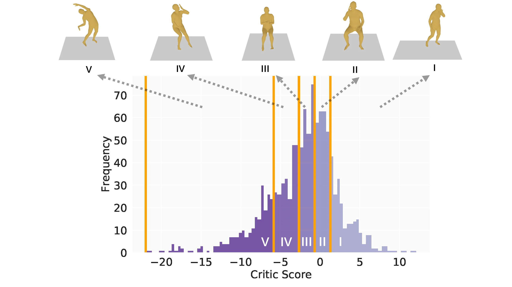

Aligning Human Motion Generation with Human Perceptions
Overview

We collect MotionPercept, a large-scale, human-annotated dataset for motion perceptual evaluation, where human subjects select the best quality motion in multiple-choice questions. Using this dataset, we train MotionCritic to automatically judge motion quality in alignment with human perceptions, offering better quality metrics. Additionally, we show that MotionCritic can enhance existing motion generators with minimal fine-tuning.
Abstract
Human motion generation is a critical task with a wide spectrum of applications. Achieving high realism in generated motions requires naturalness, smoothness, and plausibility. However, current evaluation metrics often rely on error with ground-truth, simple heuristics, or distribution distances and do not align well with human perceptions. In this work, we propose a data-driven approach to bridge this gap by introducing a large-scale human perceptual evaluation dataset, MotionPercept, and a human motion critic model, MotionCritic, that capture human perceptual preferences. Our critic model offers a more accurate metric for assessing motion quality and could be readily integrated into the motion generation pipeline to enhance generation quality. Extensive experiments demonstrate the effectiveness of our approach in both evaluating and improving the quality of generated human motions by aligning with human perceptions.
MotionPercept
We first introduce a large-scale human perceptual evaluation dataset, MotionPercept.
We implement a pipeline for data collection and annotation. First, we collect generated human motion sequence pairs, and then instruct the annotators to select the best candidate. The best option should be the most natural, visually pleasing, and free of artifacts.
MotionCritic

(I) Critic model training process. We sample human motion pairs $\mathbf{x}^{(h)},
\mathbf{x}^{(l)}$ annotated with human preferences, upon which the critic model produces score pairs. We
use perceptual alignment loss $L_\text{Percept}$ to learn from the human perceptions.
(II) Motion generation with critic model supervision. We intercept MDM sampling process at random timestep
$t$ and perform single-step prediction. Critic model computes the score $s$ based on the generated motion
$\mathbf{x}_0'$, which is further used to calculate motion critic loss $L_\text{Critic}$.
KL loss $L_\text{KL}$ is introduced between $\mathbf{x}_0'$ and last-time generation result
$\widetilde{\mathbf{x}_0}'$.
MotionCritic as Motion Quality Metric
The MotionCritic model scores motion based on human preference alignment and can serve as a motion quality metric. Here, we present the results on the test set, demonstrating that the critic score effectively reflects motion quality.
We further test the generalization of our critic model on the GT motion distribution. We group the motions in the HumanAct12 test set into five evenly distributed groups based on their critic scores, labeled GT-I to GT-V from highest to lowest. The distribution of critic scores for GT motions is shown in the histogram.
We discover that the outliers with small critic values are indeed artifacts within the dataset, as shown in the video. This demonstrates that MotionCritic can be used for dataset diagnosis.
We also compare the motions across the groups and find that critic scores align well with motion quality, as confirmed by extensive user studies.
MotionCritic as Training Supervision
We show that fine-tuning with our critic model significantly improves motion quality with higher critic scores. Notably, this requires only a few hundred iterations, demonstrating the effectiveness and efficiency of our method.
Video Presentation
BibTeX
@inproceedings{motionpercept2025,
title={Aligning Motion Generation with Human Perceptions},
author={Wang, Haoru and Zhu, Wentao and Miao, Luyi and Xu, Yishu and Gao, Feng and Tian, Qi and Wang, Yizhou},
booktitle={International Conference on Learning Representations (ICLR)},
year={2025},
url={https://arxiv.org/pdf/2407.02272}
}Acknowledgement
If you use MotionPercept and MotionCritic in your work, please also cite the original datasets and methods on which our work is based.
MDM:
@inproceedings{
tevet2023human,
title={Human Motion Diffusion Model},
author={Guy Tevet and Sigal Raab and Brian Gordon and Yoni Shafir and Daniel Cohen-or and Amit Haim Bermano},
booktitle={The Eleventh International Conference on Learning Representations },
year={2023},
url={https://openreview.net/forum?id=SJ1kSyO2jwu}
}HumanAct12:
@inproceedings{guo2020action2motion,
title={Action2motion: Conditioned generation of 3d human motions},
author={Guo, Chuan and Zuo, Xinxin and Wang, Sen and Zou, Shihao and Sun, Qingyao and Deng, Annan and Gong, Minglun and Cheng, Li},
booktitle={Proceedings of the 28th ACM International Conference on Multimedia},
pages={2021--2029},
year={2020}
}FLAME:
@inproceedings{kim2023flame,
title={Flame: Free-form language-based motion synthesis \& editing},
author={Kim, Jihoon and Kim, Jiseob and Choi, Sungjoon},
booktitle={Proceedings of the AAAI Conference on Artificial Intelligence},
volume={37},
number={7},
pages={8255--8263},
year={2023}
}UESTC:
@inproceedings{ji2018large,
title={A large-scale RGB-D database for arbitrary-view human action recognition},
author={Ji, Yanli and Xu, Feixiang and Yang, Yang and Shen, Fumin and Shen, Heng Tao and Zheng, Wei-Shi},
booktitle={Proceedings of the 26th ACM international Conference on Multimedia},
pages={1510--1518},
year={2018}
}DSTFormer:
@inproceedings{zhu2023motionbert,
title={Motionbert: A unified perspective on learning human motion representations},
author={Zhu, Wentao and Ma, Xiaoxuan and Liu, Zhaoyang and Liu, Libin and Wu, Wayne and Wang, Yizhou},
booktitle={Proceedings of the IEEE/CVF International Conference on Computer Vision},
pages={15085--15099},
year={2023}
}SMPL:
@incollection{loper2023smpl,
title={SMPL: A skinned multi-person linear model},
author={Loper, Matthew and Mahmood, Naureen and Romero, Javier and Pons-Moll, Gerard and Black, Michael J},
booktitle={Seminal Graphics Papers: Pushing the Boundaries, Volume 2},
pages={851--866},
year={2023}
}We also recommend exploring other motion metrics, including PoseNDF, NPSS, NDMS, MoBERT, and PFC. You can also check out a survey of different motion generation metrics.